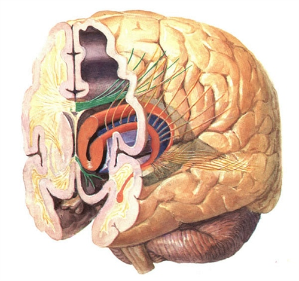

| 科学家研究大脑的两半球 |
神奇大脑的两半球
脑是心理活动的器官。脑科学与心理学密切相关。
脑科学家研究发现，大脑左右半球在结构上虽然几乎完全一样，但在功能上却有所不同。左半球是处理言语、进行抽象逻辑思维、集中思维、分析思维的中枢。它主管着人们的说话、阅读、书写、计算、排列、分类、言语、记忆和时间感觉等心理活动，具有连续性、有序性、分析性等功能。右半球则是处理表象和进行具体形象思维、发散思维的中枢。它主管着人们的视知觉、复杂知觉、模型再认、形象、记忆、认识空间关系、识别几何图形、想象、做梦、理解隐喻、发现隐蔽关系、模仿、音乐、节奏、舞蹈以及态度、情感等，具有不连续性、弥漫性、整体性等等功能。 http://photo8.hexun.com/p/2007/0903/126359/b_AE541AE3471C091E6BFCE929564BDE79.jpg
由于大脑的左半球专门负责言语功能，因而左半球受到损伤的人，就往往不能说话，不能进行抽象逻辑思维，以及出现不能进行阅读、情绪暴躁等症状。而右半球受到损伤的人，主要表现为情绪较低落，但仍然能从事言语活动。正因如此，人们往往把负责言语功能的左半球称为“优势半球”。但是，后来人们又发现，并不是所有人的左半球都是优势半球，有些人的大脑左右半球的功能分工与一般人恰恰相反。与大脑左右半球相联系的还有人的双手。人的右手是由大脑左半球支配的，左手则由大脑右半球支配。以使用右手为主的人，他的大脑左半球往往是优势半球。以使用左手为主的人，其大脑右半球往往是优势半球。
大脑两半球的分工，一般在５岁以前还不太明显，优势半球还没有形成。５岁以后，大脑两半球逐渐分工，到十二三岁以后就基本上形成了固定的优势半球。所以，在十二三岁以前，如果优势半球受到损伤，另一半球能够逐步形成为新的优势半球。如果在十二三岁以后优势半球受到损坏，另一半球则很难形成为新的优势半球，这个人就很可能永远丧失言语能力了。
根据研究发现，在校儿童青少年的右脑功能开发不够充分，甚至被忽视，这对学生智力发展是很不利的。因此，学生在学习过程中不应偏科，尤其要加强体育、音乐、美术的学习。
在大脑半球表面有许多弯弯曲曲的沟裂，称为脑沟，其间凸出的部分称为脑回。这些脑沟、脑回就像一块皱拢起来的绸布，一旦展平，它的面积像半张普通报纸大小，约2250平方厘米。
19世纪以前的科学家以为大脑发挥它的各种功能是整体活动的结果。1870年德
本世纪，加拿大医生彭菲尔德用微电剌激法，全面而详细地绘制出大脑皮质的分工图，使人们不胜惊奇的是，人的运动和感觉功能在大脑皮质上的投射是倒置的，而且一些运动、感觉精细而灵巧的器官（如手和唇、舌等），比那些运动和感觉较简单而迟纯的部分（如躯干），在大脑皮质上投射的面积要大。
紧接着，法国医生布洛卡发现，右半身瘫痪的病人常伴有失语，死后尸体解剖发现病人是左大脑半球额叶有病变；而左半身瘫痪的病人不伴有失语症，因此首先提出了“语言中枢”的概念，并把左半球称为“优势半球”。习惯用右手的人（占90％左右），所有有关语言活动，如阅读和书写、理解和命名、计算和推理等功能都在左大脑半球。
那么，右大脑半球（非优势半球）是否趋向退化呢？这是一个很有意思的问题。从左右大脑两半球互相之间的联系来看，首先它们藉着一束强大的神经纤维（约含2亿条神经）——胼胝体相连，互相交流两半球的信息。这样既有分工又是一个整体。70年代，美国科学家斯佩里和同事们做了裂脑手术——切断胼胝，来治疗一些用药不能控制癫痫发作的病人，并做了许多非常精细的心理实验，结果发现大脑两半球有各自独立的功能。它们分别是：左大脑半球有语言、阅读、书写及逻辑、推理、计算的能力；右大脑半球则有图形、空间结构的构思能力，有音乐欣赏能力，及形成非言语性概念的能力。左大脑半球的思维活动是人类特有的功能，由此可以说明人脑进化、发展的一侧化趋势，也提示人脑存在着巨大的潜力。